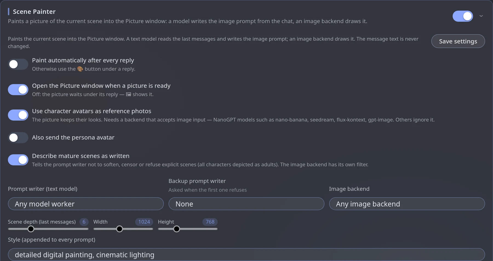

Scene Painter
module.scenePainterScene Painter paints the current scene into the Picture window. A text model reads the last messages and writes an image prompt; an image backend draws it. A 🎨 Paint button appears under replies — or paint automatically after every reply.
text model→Image backend→Picture window
Choose a backend
| Backend | Cost | Needs |
|---|---|---|
| Pollinations | Free | No key — easiest start |
| OpenAI-compatible | Paid | OpenAI, NanoGPT and similar — an endpoint and key |
| Automatic1111 / Forge | Your own PC | A running local server |
With NanoGPT, character avatars are sent as reference photos so the picture keeps their looks. Use a model that accepts image input (nano-banana, seedream, flux-kontext, gpt-image).
Set it up
Turn on Scene Painter
Engine panel → Modules → Scene Painter.
Add an image backend
Press + Pollinations, + OpenAI-compatible or + Automatic1111, fill it in and press Save backends.
Pick the prompt writer
Choose the text model that writes the image prompt. Optionally set a Backup prompt writer, asked when the first one refuses.
Paint
Press 🎨 Paint under any reply — or switch on Paint automatically after every reply.
The settings screen, with its defaults:

Settings
| Setting | What it does |
|---|---|
| Image backend | Which service draws |
| Prompt writer / Backup prompt writer | The text model that turns messages into an image prompt; the backup is asked if the first refuses |
| Instruction for the prompt writer | How the prompt should be written. The default is fine to start with |
| Style | A fixed tail added to every prompt. Starts as detailed digital painting, cinematic lighting; try watercolor, soft light |
| Negative prompt | What to avoid. Used by Stable Diffusion and Pollinations; OpenAI ignores it |
| Scene depth | How many recent messages the prompt writer reads |
| Width / Height | Picture size in pixels (1024 × 768 by default). Bigger is slower and costs more |
| Paint automatically after every reply | Otherwise use the 🎨 button |
| Open the Picture window when ready | Off: the picture waits under its reply; 🖼 shows it |
| Use character avatars as reference photos | Keeps the characters' looks. Needs a backend that accepts image input. Also send the persona avatar adds yours |
| Describe mature scenes as written | Tells the prompt writer not to soften or refuse explicit scenes (all characters shown as adults). The image backend has its own filter |
Pictures look off? Add a style tail and a negative prompt, raise Scene depth for more context, and use a backend that supports reference images so characters stay consistent.